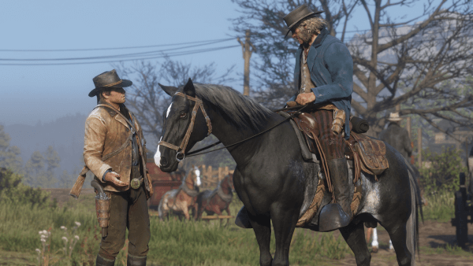

So here we are within our jobs comparison, what our focus is on this week is to make sure you can see the opportunities that await you outside of university. Whether that be within the Computer Games area or Web Development, Software Engineering the possibilities are endless. So what companies are great to work for? Below I have put together three different jobs from 3 different areas of the industry. Take a look at them and see what you think best suits you and your kind of work ethic…
What is right for me?
by Simon May
"Rockstar Games doesn't see why only the kids should have all the video game fun. The company, a subsidiary of Take-Two Interactive Software, is a publisher of mature-rated video games including the hugely popular Grand Theft Auto series. Other series titles from the game studio include Midnight Club, Red Dead, Manhunt, and Max Payne. Rockstar Games' titles are available for major gaming platforms, including Sony's Playstation, Microsoft's Xbox, and Nintendo's Wii, as well as for PCs and portable devices such as the Playstation Portable and Nintendo DS. Parent Take-Two does over half of its business in the US; Europe and the Asia Pacific region are its other key markets." - Glassdoor
To some working for Rockstar may be a dream come true, but don't fall into a job just because you like what they've produced. Its always best to check how previous employees have felt for the job and what the positions are. As stated on Glassdoor the reviews from previous employees only gives Rockstar Games a 3.1 out of 5 star rating. So take some time to research if its right for you. 
There are many transferable skills that we can take as students into whichever pathway we chose, the need for debugging being used in web, software development, games techniques and any other IT based role. One of the biggest skills you will need to use is the ability to work as a part of a team, and people skills. Being able to communicate and make sure that your code be it C# or CSS needs to be able to be read by your team and should they need to change it be able to without taking the changes personally. With games programming you could be programming for one specific platform, which means everything is just done for one machine, when doing web however you need to make sure that they are compatible for phones, tablets, tvs, pc and however else the website can be viewed which means keeping the code up to date with new software and conventions, where as once a game has been made you are free to move on unless the game required any updates, but this may still only be on one specific platform. There is the chance they can be multi platform and coded differently so would be completely separate as they would use different languages and engines to run.
Donec cursus eget massa sed iaculis.
Donec eu varius augue. Interdum et malesuada fames ac ante ipsum primis in faucibus. Cras interdum dolor id urna vulputate, sed tempus ex aliquet. In ut massa vehicula, efficitur purus a, faucibus mauris. Vivamus ut venenatis enim, nec rhoncus lacus. Integer sit amet vulputate erat. Fusce varius pretium varius. In tincidunt ligula velit, ac dictum sapien dictum at. Donec euismod ultrices orci, sed tempor dolor ultricies sed. Aenean eget cursus quam. Proin consectetur nisi ac arcu venenatis rhoncus. Suspendisse mollis, diam vitae porttitor volutpat, nulla tortor tristique nulla, quis fermentum felis neque a justo. Nullam nunc dolor, pulvinar sed faucibus sed, sollicitudin ac massa. Phasellus nisl enim, efficitur nec dui sit amet, facilisis vestibulum purus. Fusce egestas augue tristique lectus condimentum sollicitudin.